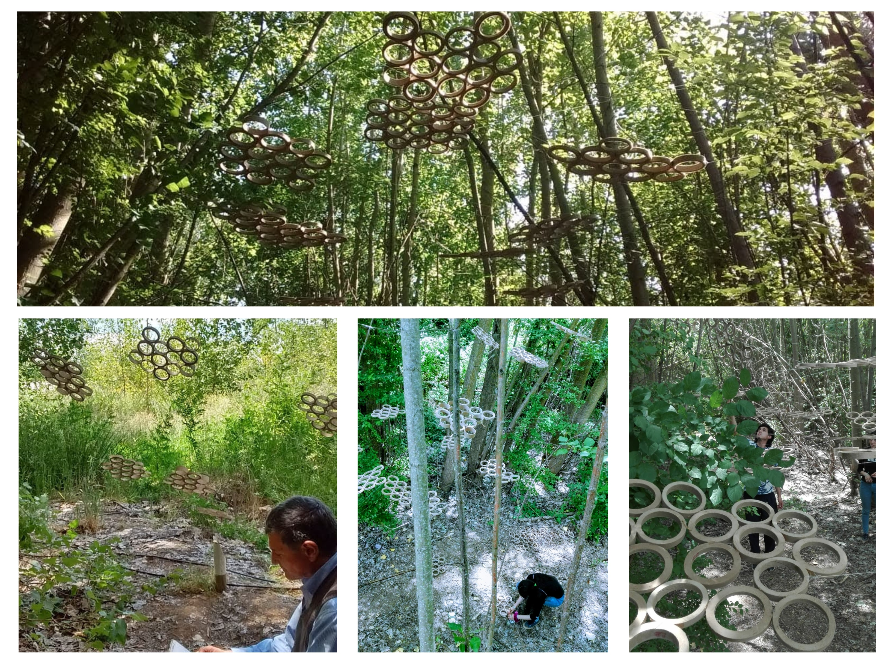

Esta primera intervención construida con mis propias manos
(y algunas manos extras) se realizó en la parte trasera de la universidad
y se debía intervenir de tal forma que el proyecto no afectara gravemente el lugar, y generara
su propia atmósfera... trabajando con la forma, el espacio y la materia
Como fue este proceso:
Primero pensé en el espacio.. y elejí una zona boscosa de la parte trasera de la universidad,
este lugar tenia arboles, sonidos, olores, colores y tranquilidad
Comienza a imaginarlo con el siguiente audio:
Despúes pensé la materia y llegué a esto:
Luego lo rebané y me quedaron muchos circulos de carton
Entonces llegó el momento en el cual tenia el espacio y la materia pero faltaba... ¡la forma!
Entonces a pensar...
Como organizar estos circulos para crear un nuevo espacio que intervenga y genere sensaciones, analisando al mismo
tiempo, que esta intervención debe generar un interior, un intermedio y un exterior.
(mis primeros croquis)
Entonces decidí que estos circulos estarían colgando, así no interfieren el paso, y serán como un
compañero mientras recorres el lugar
mira la elavoración de la maqueta
Finalmente luego de tomar las decisiones, el analísis y las probabilidades posibles, comencé a construir el proyecto
Mira el resultado final

Y por último te invito a ver un pequeño video donde muestro mi intervención y la de otros compañeros,
espero que te diviertas...